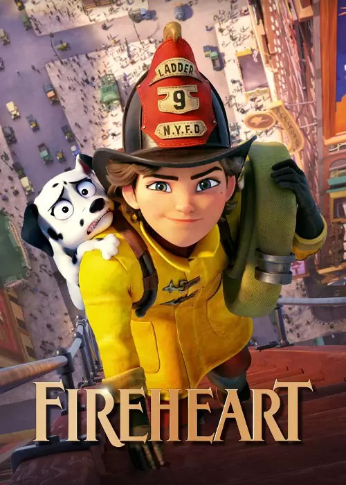

During World War II, Lt. Gen. Leslie Groves Jr. appoints physicist J. Robert Oppenheimer to work on the top-secret Manhattan Project. Oppenheimer and a team of scientists spend years developing and designing the atomic bomb.
Their work comes to fruition on July 16, 1945, as they witness the world's first nuclear explosion, forever changing the course of history.
OPPENHEIMER
Chris Gardner takes up an unpaid internship in a brokerage firm after he loses his life's earnings selling a product he invested in.His wife leaves him and he is left with the custody of his son.
THE PURSUIT OF HAPPINESS
Peter Parker, the beloved superhero Spider-Man, faces four destructive elemental monsters while on holiday in Europe. Soon, he receives help from Mysterio, a fellow hero with mysterious origins.
SPIDERMAN:FAR FROM HOME

In New York City in 1932, women are not allowed to be firefighters. When the city's firemen disappear in mysterious fires,
Georgia Nolan sees a golden opportunity. She disguises herself as Joe and joins a team of improvised firemen.
FIREHEART
By the end of the Second World War, the allies in the European theatre are into their final showdown.Things become tough for Don Collier, a German tank commander, while counter-attacking the enemy.
FURY
A family of ducks decides to leave the safety of a New England pond for an adventurous trip to Jamaica. However,
their well-laid plans quickly go awry when they get lost and wind up in New York City. The experience soon inspires them to expand their horizons,
open themselves up to new friends, and accomplish more than they ever thought possible.
MIGRATION
Young Asha makes a wish so powerful that it's answered by a cosmic force, a little ball of boundless energy called Star. With Star's help, Asha must save her kingdom from
King Magnifico and prove that when the will of one courageous human connects with the magic of the stars, wondrous things can happen.
WISH
In an Italian village, the wooden puppet Pinocchio is brought to life by the Blue Fairy and seeks the life of adventure while striving to be a real boy.
Pinocchio's life is turned upside down when he leaves his father to follow the circus.